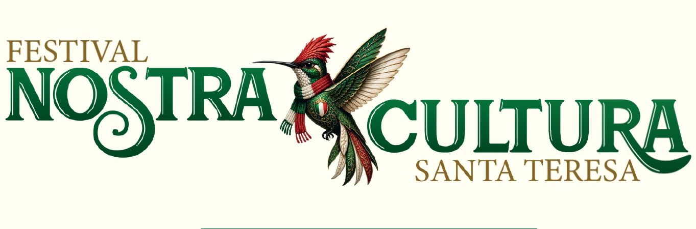
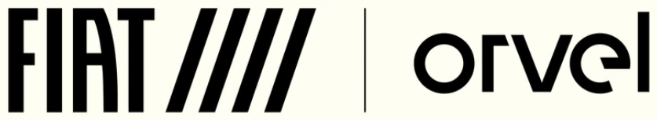
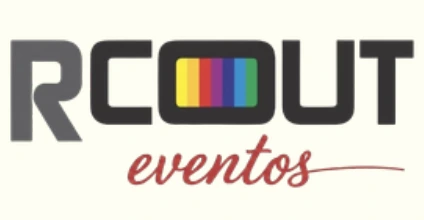

Patrocínio e realização · 7ª edição
Quem faz a festa junto.
O Festival Nostra Cultura só acontece porque empresas e instituições acreditam na cultura italiana de Santa Teresa. Este é o nosso muito obrigado a cada uma delas.

Patrocínio
Quem apresenta o festival.

Realização
Quem realiza.

Sua marca aqui
Quer patrocinar a próxima edição?
Associe sua marca a três dias de gastronomia, música e tradição italiana no coração de Santa Teresa, ao lado das marcas que já fazem parte dessa história.